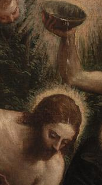
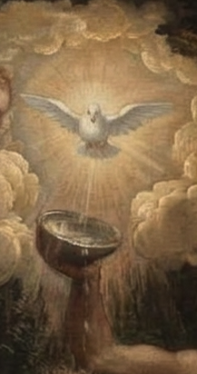
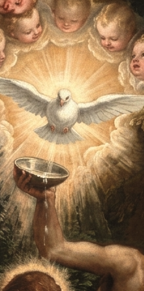

Interactive Game: Guess Which Detail is Real!
Can you spot the original artwork detail versus the AI restorations? Click your choice below:
Close-Up Comparison Gallery
Compare the authentic detail with AI results side-by-side:

Authentic Painting
Shows the original angel in the top-left corner, the water bowl, and Christ with a radiant halo.

First AI Attempt

Refined AI Result
About This Artwork & Experiment
This project explores how generative AI models reconstruct missing historical details in classic artworks. While AI generated images look convincing as a whole, close-up scrutiny reveals differences in geometry, lighting, and missing elements.
📍 Artwork Location & Information
Title: Battesimo di Cristo (Baptism of Christ)
Artist: Paris Bordon (1548–1551)
Location: Pinacoteca di Brera — Milano (Sala XIV)
🔗 Visualizza la scheda dell'opera sul sito ufficiale della Pinacoteca di Brera